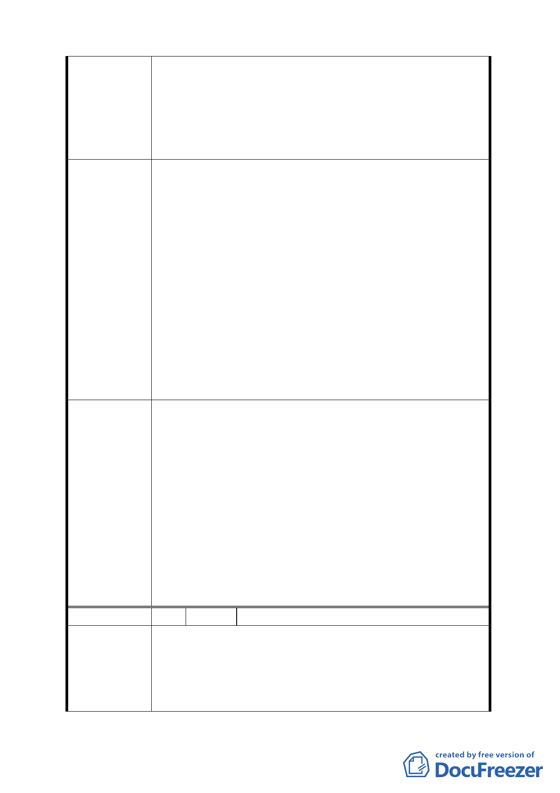

一、 G1~G10 土地請比照調整為辦公服務區，並取消『其
供第三十八組倉儲業使用之容積樓地板面積應達申
請基地總容積樓地板面積之二分之ㄧ以上』之限制。
建 議 辦 法 二、 為解決第四條所述之結構問題，請比照相鄰 F5~F27
街廓將建物高度提高至 36 公尺，可興建地上七層，
增加重量以改善水浮力。
一、經查 G1～G10 街廓係屬科技工業區（供倉儲使用），其
位於交通樞紐位置並緊鄰內湖科技園區，規劃原意係
為供倉儲、運輸、轉運及配送等使用為主，且為因應
未來科技產業蓬勃發展可能衍生之物流、倉儲需求，
以及松山機場直航後本市產業走向之調整，故建議仍
應維持倉儲業須達二分之一以上樓地板面積之規定。
二、有關建議放寬建築物高度限制以增加重量改善水浮力
發展局回應
等節，經查本案業已於都市設計管制中，基於維護整
體環境景觀，將 G1～G10 街廓建築物高度由原計畫「以
不超過 24 公尺為原則」修訂為「高度不得超過 30 公
尺」。至於建築工程設計內容涉及增加造價及追加壁樁
以改善水浮力等節，因基地之地質條件各異，無法藉
由建築物高度統一規範，建議仍應納入個別基地建築
開發計畫初期之成本效益中評估。
一、案內「基隆河（中山橋至成美橋段）計畫案（南段
地區）」街廓編號 G1-G10 之科技工業區（供倉儲使
用）第三十八組倉儲業使用之容積樓地板面積，調
整為應達申請基地總容積樓地板面積之「三分之ㄧ」
以上。
二、另為利計畫後續執行與辨識，併同修改前項使用分
委員會決議
區名稱為「科技工業區 D 區 」，並於其使用項目載
記面積規模規定，以玆完備。同時為考量市場機制
之彈性及對土地利用之完整性，於計畫書內加註該
分區內之各街廓得採合併開發集中留設方式予以規
劃設計。
三、餘依市府（發展局）回應內容辦理。
編 號 4 陳情人 徐正雄、陳怡誠、徐偉峰、吳寶珠
一、 規劃南段工業區（供倉儲使用）即容許倉儲批發業者
進駐，最近併入本科技園區之羊稠段辦公特區（二）
陳情理由
（原倉專）與南段工業區（倉儲）為同一性質之工業
使用分區，現羊稠段辦公特區（二）原已容許第 40
組農產品批發業，為避免造成法令複雜度與公平正義
8